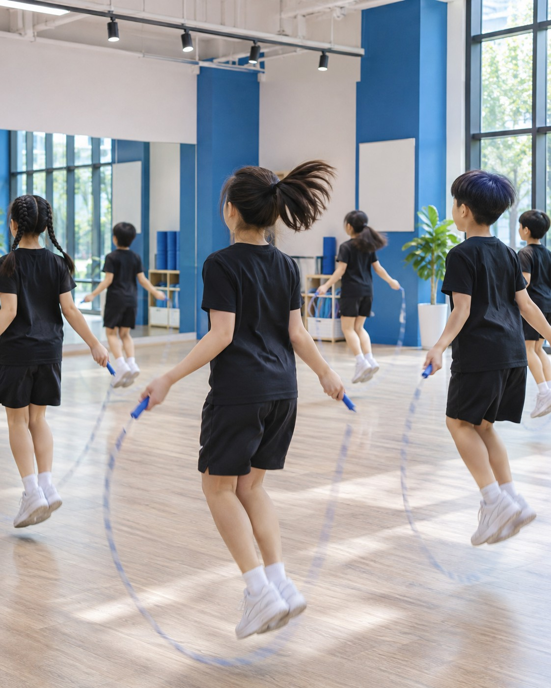
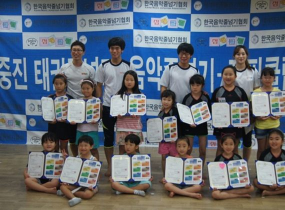

협회소개
교육자료가입
연수·세미나
교육자료
몰
구인구직/매매
고객지원
연수 일정 보기
사단법인 한국음악줄넘기협회 민간자격 과정
Since 2011
협회 소개 보기
2011년 사단법인 설립 이후지도자를 키우고, 교육관을 만들고,아이들과 함께 대회를 열어 왔습니다.
개인·짝·긴줄·음악줄넘기기술 및 지도
3,000개+
단계별 줄넘기인증 급수
35급수
급수 수업 영상
500개+
지도자 배출
6,000명+
줄넘기 대회누적 참가 선수
2만 명+
수상 · 2013 창업진흥원장 표창2015 창업원장상, 산업통상자원위원장 표창2017 글로벌 교육브랜드 대상(2개 부문)
3회

점핑클럽 교육관 가입
가입 안내 및 혜택 보기
연수 · 세미나
줄넘기 자격증 취득 및 전문가로 성장
1가지 기술을 수십 가지 지도법으로!
관원이 늘어나는 법
SCHEDULE
연수지도자 자격연수 3·2·1급(보수)
2026-11-08
2026-12-13
대회협회장배 챔피언십(온라인)
2026-11-20
강사음악줄넘기 일요강사반
상시
심사주니어마스터 심사
차수·일정
구인용산청소년센터 음악줄넘기 시간강사
2026-10-13
구인오산지역 초등학교 음악줄넘기 일일교육
2026-10-07
구인수원 문화센터 음악줄넘기 강사
2026-10-02
구인거제 커뮤니티센터 줄넘기 강사
구인서울개봉초 방과후 음악줄넘기 강사
2026-09-27
대회와 시범, 연수 현장에서 아이들과 지도자들이 함께한 순간을 전합니다
2026 협회장배 챔피언십(온라인) 참가 신청 시작
2026.10.20
소식

싱가포르 지회 공식 출범
2026.10.08
지도자 자격연수 후기
2026.09.29
연수 후기
협회장기 전국줄넘기 대회 성료
2026.06.22
대회·시범
SBS 모닝와이드 출연
2018 방영일
언론보도
2017 글로벌 교육브랜드 대상 수상
2017 수상일
수상
방송 출연 영상 1
시범 공연 영상
대회 하이라이트